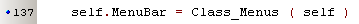
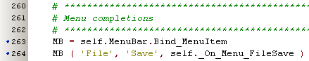
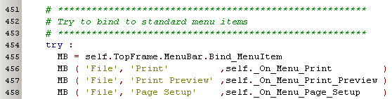
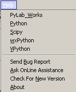
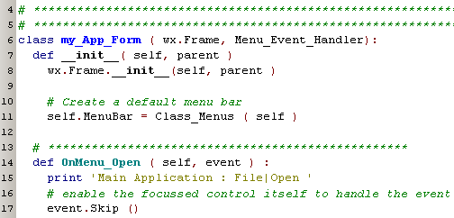
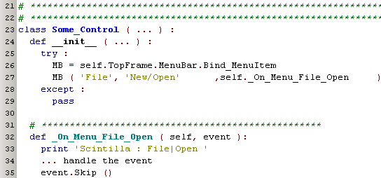

Menu Support  (november 2008)
(november 2008)
Application Designer / Domain Expert / Control Designer / Core Developer
Introduction
The module menu_support, has convenience procedures for
MenuBar
The MenuBar support has the following features:
The MenuBar, definied as the class Class_Menus, has a default menu, which should be preferable used, so all forms will have the same menus. So in general the menu can be created in a frame, like this:

NOTE: some components that will be placed on the frame, will try to hook them self into the menu. For the moment this is done by looking for a control named "MenuBar" in the Frame. It would be better to look for the control of the type "MenuBar".
Now you can bind actions to existing or new menu items, e.g. to bind a method to the menu File, item Save :
( If the menu and / or the item doesn't exist yet, it's automatically added. Main items are inserted just before the last one. )

It's not strictly necessary to do the bindings in the frame, often it's even far more convenient to place both the bindings and the completion methods in a component. e.g. it's very logical that a scintilla textcontrol binds actions to printing menu items, which could look something like this (so this piece of code is not from the frame but from the editor class !!) :

The menubar will register all the owners of the methods, so it can automate the whole menu handling by itself. On popup of the menu, the menubar itself will enable / disable the correct items, depending on which control on the form has focus. So when you've 2 editors on the form and you launch a print command, the editor that has focus will be printed.
I don't have a nice feature to enable / disable the menus itself (but I think that's of less importance).
For a number of menu-items, there's a default action bound (but of course you can override it):

For menuitems which are already in the menu at the moment the menubar is created, it's not necessary to bind the event, but instead you can also realize the binding by taking care the method "OnMenu_<item>" exists in the frame.
Main Control or Sub Control
In many situations a control can catch all the events, but often the main control ( frame ) will want to pre-process and / or even Veto the action.
As this is written in the very premature stage of the concept, we might change it in the future.
Method 1 is the method which performs the above actions, but it can perform this for the standard menu items. So here we already have our first reason to improve this handling in the future.
Goal:
In the frame we bind to the default menu-item, by defining a event_handler with the correct name: line 14 in the picture below.

In the control that's placed somewhere on the frame, we bind to the menu-item, with the special method Bind_MenuItem, at line 27 in the picture below. The event handler at line 32 will be called if not captured by the parent frame, or if the parent frame issues an event.Skip().
